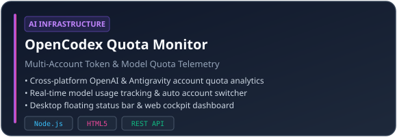

💡 Core Philosophy & Engineering Focus
- 🚀 Desktop Utilities & Automation: Native Windows & cross-platform applications (Python, C#, PySide/Qt, Node.js).
- 🤖 AI Infrastructure & Agents: Custom AI Agent automations, proxy routing, token telemetry, workflow integration.
- ⚡ Clean Architecture & Data Systems: Local privacy, DPAPI key security, modular designs, high-performance algorithms.
Identity : Full-Stack Engineer & AI Automation Craftsman
Location : China (UTC+8)
Primary OS : Windows 11 / Linux (WSL2 / Ubuntu)
Interests : AI Agents · Desktop Widgets · Quantitative Trading Indicators · System Optimization

💻 Programming Languages: Python · Java · C# · TypeScript · JavaScript · SQL
🛠️ Frameworks & GUI: PySide6 · Node.js · PyInstaller · Playwright
🤖 AI & Automation: Codex CLI · OpenAI API · Feishu Drive · Ollama

| Project Showcase | Focus & Architecture |
|---|---|
 |
Windows Native API Quota Monitor • Multi-Key reseller API balance tracking • Windows DPAPI local key encryption |
 |
Multi-Account Model & Token Telemetry • OpenAI & Antigravity quota analytics • Desktop float widget & cockpit dashboard |

GitHub Stats & Top Languages telemetry auto-rendered on profile load